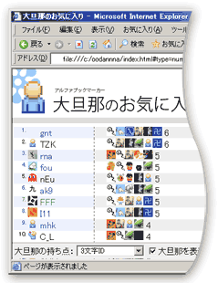

大旦那のお気に入りの裏側
大旦那のお気に入りの技術的な側面に関して解説してみました。
大旦那のお気に入りデータの取得
まずは大旦那のお気に入りを調べるところから始めました。はてな ID からお気に入りを取得する部分は Perl の HTML::TreeBuilder::XPath を使って書いてみました。
sub getFavorites{
my $id = shift;
my $res = URI::Fetch->fetch(sprintf 'http://b.hatena.ne.jp/%s/favorite', $id)
or die URI::Fetch->errstr;
my $tree = HTML::TreeBuilder::XPath->new;
$tree->parse($res->content);
$tree->eof;
# /user1//user2//user3/
my $favorites = $tree->findvalue('/html//div[@class="favoritelist"]//li/a[position()=1]/@href');
$favorites=~m!/([^/]+)/!g;
}
JSON 化
このデータを JavaScript で食えるように JSON 化してやったのが data.js です。
var fav = {
jkondo : {count : 690, favorite : ["naoya","umedamochio","mkusunok","miyagawa"]},
// ...
};
旦那衆、若旦那の被お気に入り数のデータと合わせても 61KB。この程度なら、ページをロードするたびに読み込んでも問題ない、と判断して毎回クライアントに渡すことにしました。
その結果、集計結果を切り替えても、アイコンをクリックして詳細を見ても、すべてブラウザ内で処理が可能になりました。サーバーにリクエストをする必要がなく、HTTP リクエストのラウンドトリップタイムがない分だけ、すばやくページ表示することができます。
ただ、この方法は万能ではなくて、すべてクライアントで処理する必要があるため、必要なデータだけをサーバーからとってくる Ajax に比べて、メモリや CPU の消費量が増えてしまうという問題もあります。作成するシステムに応じて、どれだけをサーバーに任せて、どれだけをクライアントに任せるかを判断する必要があります。
条件の追加
今回、すべてのデータをクライアントに転送していることを利用して、１つ面白いことができます。集計条件の追加です。
ソース一式をダウンロードして、alphavorite.js をエディタで開いてみてください。先頭で analyzers というハッシュがあるのですが、ここで集計方法を定義しています。
var analyzers = {
count : {
name : "各1pt",
point : function(){return 1;},
pixelPerRatio : 16
},
fav : {
name : "被Fav数",
point : function(hifav, fav, fromid, toid){return hifav},
pixelPerRatio : 0.16
},
fav_ratio : {
name : "被Fav数 / Fav数",
point : function(hifav, fav, fromid, toid){return fav != 0 ? hifav / fav : 0},
pixelPerRatio : 1.6
}
};
この部分を修正することで、新たに集計方法を追加することができます。
例えば、id が３文字の人でランキングをとるには次のようにします。
},
num : {
name : "3文字IDのみ",
point : function(hifav, fav, fromid, toid){
return toid.length == 3 ? 1 : 0;
},
pixelPerRatio : 16
}
};

index.html をブラウザで開くだけで、3文字IDの集計をテストすることができます。データをすべて JavaScript が持っているおかげで、ローカル環境でも簡単にテストできるわけです。これこそ、サーバーレスと表現したおもしろさです。
他にも、例えば、id に数字を含む、とか、はてなの社員だけ、とか、いろいろやって遊べるかもしれません。
いちおうパラメータを解説。
- name: 画面に表示する日本語名。
- point: 大旦那が何点投票するかを示す値。
- hifav: 大旦那の被Fav数。
- fav: 大旦那のFav数。
- fromid: 大旦那の id。
- toid: 投票対象の id。
- pixelPerRatio: １ポイントを何ピクセルで表示するか。画面幅に合わせて適当に変更すべし。
おまけ
蛇足を２つほど。
最近のブックマークを取得する部分は、Drk7jp さんの XML を JSON に変換するサービス を利用しています。
もう１つの蛇足。擬似フレームっぽいデザインですが、JavaScript は使っていません。すべて CSS だけでデザインしました。CSS は jigelog さんのものを参考にさせてもらいながら作り上げました。